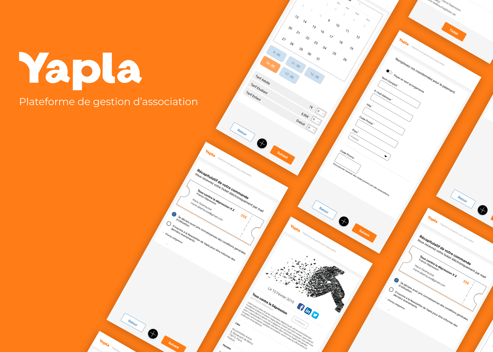

Yapla
Un site de gestion pour les associations
Yapla est une plateforme permettant aux associations de gérer leur budget et leurs évènements gratuitement. Les associations peuvent ainsi créer des fiches pour leurs événements puis les partager sur leur site et sur les réseaux sociaux. Le brief de ce projet était d'optimiser le tunnel d'inscription à un évènement afin d’inciter l'utilisateur à s'inscrire et à laisser un pourboire. Nous avons travaillé à deux sur ce projet.
Phase de Recherche : User Experience (UX)
Nous avons tout d'abord réalisé une analyse heuristique du parcours d'inscription en marquant les points bloquants que nous rencontrions.
Interviews et Brainstorming
Afin de connaître les points bloquants que peuvent rencontrer les d'utilisateurs, nous avons mené des tests modérés avec différents profils. Nous avons ensuite rassemblé les données recueillies dans un tableau Google Sheets et les avons triées par ordre de priorité. Une fois les points bloquants identifiés, nous avons fait un audit concurrentiel de plateformes telles que 'helloasso' et un audit sectoriel de plateformes telles que 'digitdick' et 'ticketmaster' pour s'inspirer de leurs points forts. Nous avons analysé leur contenu et ergonomie et avons rassemblé leurs points forts dans un Google sheet. Nous avons ensuite recherché des solutions pour chaque point bloquant du parcours d'inscription de Yapla. Une fois les solutions trouvées, nous avons établi un parcours type et l'avons intégré dans des wireframes.
Conception Graphique - User Interface (UI)
Fiche de l’événement
Lorsqu'un utilisateur clique sur un post d’événement, il atterrit sur la fiche de celui-ci. Il est important de lui donner envie de rentrer dans le tunnel d'inscription et ce, en mettant en avant toutes les informations dont il a besoin. Nous avons donc décidé de mettre toutes les informations importantes au-dessus de la ligne de flottaison et avons ajouté des informations qui manquaient telles que le type de l'événement, l'horaire, le prix moyen et l'accès en métro. Concernant le type de l'événement, nous avons ajouté un tag à côté du titre afin que l’utilisateur comprenne instantanément de quel type d’évènement il s'agit : conférence, concert, pique-nique, etc...
Profils des organisations
Nous voulions que les utilisateurs puissent avoir accès à davantage d'informations concernant les différentes organisations. Dans ce but, nous avons créé des profils contenant les informations principales de chaque organisation telles que : leur mission, leurs contacts, leurs événements passés et à venir.
Tunnel d'achat
Sur le site actuel, il n'y a pas de panier disponible. Nous avons décidé de rajouter un panier à chaque étape afin de rassurer l'utilisateur dans son parcours d'achat.
Inscription
La première étape consiste à choisir le jour et l'heure auxquels l'utilisateur souhaite participer à l'évènement. Il doit d'abord choisir le jour pour ensuite visualiser les horaires disponibles pour la date sélectionnée. Les différents tarifs sont ensuite affichés en fonction du jour et de l'heure choisis. L'utilisateur peut ainsi indiquer le nombre de tickets par forfait.
Contribution
L'une des sources de revenu de Yapla est le pourboire laissé par les utilisateurs du site :Yapla demande aux utilisateurs de donner un pourboire lors du paiement du billet de l’événement choisi. Après avoir questionné différents utilisateurs, nous avons remarqué que plusieurs d’entre eux étaient surpris de l’apparition d’une demande de pourboire au moment du paiement. Nous avons donc décidé de créer une page dédiée à la demande de pourboire afin que l'utilisateur ne soit pas surpris et comprenne mieux de quoi il s'agit. Sur cette page dédiée, nous avons mis en avant des citations d'organisations utilisant Yapla, ainsi qu'un texte expliquant la nécessité de ce pourboire pour la survie de la plateforme. Nous avons donc changé le système de jauge contre un système de choix avec des bulles de pourboires suggérés.
Coordonnées
L'étape suivante est celle des coordonnées ; l'utilisateur doit renseigner ses informations de paiement ainsi que son code promo, s’il en a un. Le pourcentage de réduction est visible directement à côté du code promo. Ce pourcentage est ensuite affiché dans le panier.
Paiement
Avant le paiement final, l'utilisateur a accès à un récapitulatif de sa commande avec le montant final (incluant le pourboire et le code promo), le nombre de tickets et les informations de la personne payant.
Prototypage et Tests Utilisateurs
Avant le paiement final, l'utilisateur a accès à un récapitulatif de sa commande avec le montant final (incluant le pourboire et le code promo), le nombre de tickets et les informations de la personne payant.